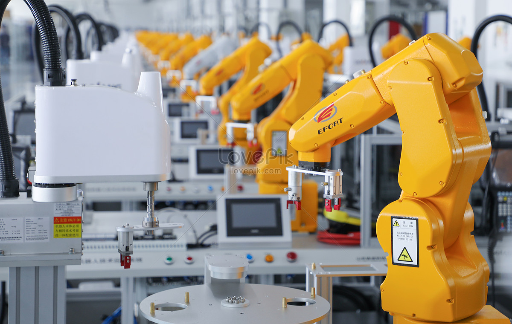
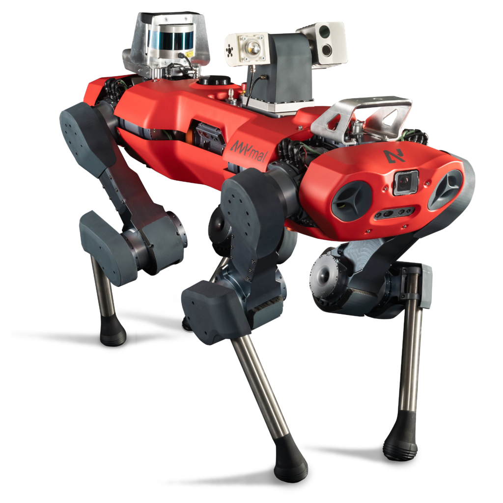

In simple terms, robotics combines science, engineering, and technology to design, construct, operate,
and use machines programmed to replicate, substitute, or assist humans in completing tasks of varying complexity.
These machines are known as robots.
Robots have a long history, dating back to ancient Greece; notably, the first digital-operated and programmable
robot debuted in the mid-twentieth century. Robotics quickly took over key industries like automotive manufacturing,
with early spot welding robot prototypes used in General Motors facilities in 1961. Throughout the years,
Industrial Robotsr:Industrial robots are designed for use in manufacturing and production environments. They are often used for tasks such as welding, painting, assembly, and material handling in industries like automotive, electronics, and consumer goods production.
Service Robots :Service robots are intended to assist humans in various tasks outside of industrial settings. They can be found in applications such as healthcare, hospitality, cleaning, and personal assistance. Examples include robotic vacuum cleaners
Autonomous Mobile Robots (AMRs): AMRs are robots equipped with mobility capabilities and autonomy to navigate and operate in dynamic environments without human intervention. They are commonly used in warehouses, logistics centers, and other facilities for tasks like inventory management, material transport, and order picking.
Medical Robots:Medical robots are used in healthcare settings for surgical procedures, rehabilitation, and patient care. Surgical robots, for example, assist surgeons during minimally invasive surgeries, while rehabilitation robots help patients recover from injuries or disabilities.